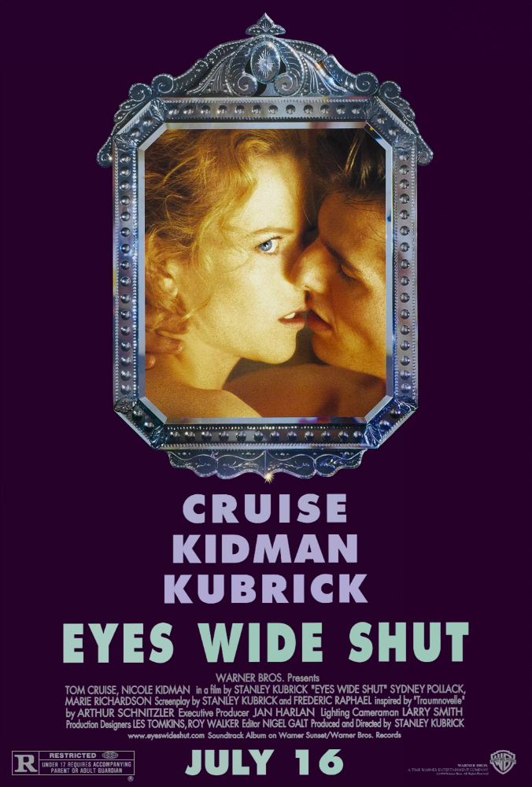

EYES WIDE SHUT |
ㅤ | ||
|---|---|---|---|
|  | SINOPSI | Actors Principals |
|
| Després que l'esposa del doctor Bill Harford, Alice, admeti tenir fantasies sexuals sobre un home que va conèixer, Bill s'obsessiona amb tenir una trobada sexual. Descobreix un grup sexual clandestí i assisteix a una de les seves reunions, i ràpidament descobreix que està a sobre del seu cap. |
Tom Cruise Nicole Kidman Sydney Pollack Marie Richardson Rade Šerbedžija Camp Todd |
||
| CRÍTIQUES | |||
| "Cada pla ha estat elegit amb molta cura. Per a aquells que el cine sigui una mica més substancial que un simple entreteniment, el llançament d''Eyes...' és un moment cim." | |||
| "No només manca per complet d'idees, sinó que a més no agrada impactar en l'espectador." | |||
| "Un tipus de cinema molt personal, però també poètic, gairebé oníric, del qual aspira a assolir el cinema comercial. Si un estudi de cinema llança una pel·lícula millor aquest any, serà una autèntica sorpresa." | |||
| "Té més substància que lògica: quan més t'impacta és generalment quan el que succeeix en pantalla no té cap sentit." | |||
| Dirigida per: Stanley Kubrick | |||
| Any: 1999 | |||
| País: Regne Unit, Estats Units d'Amèrica | |||
| Llegües: Anglès | |||
| Duració: 159 minuts | |||
| Gènere: Thriler, Drama, Misteri |